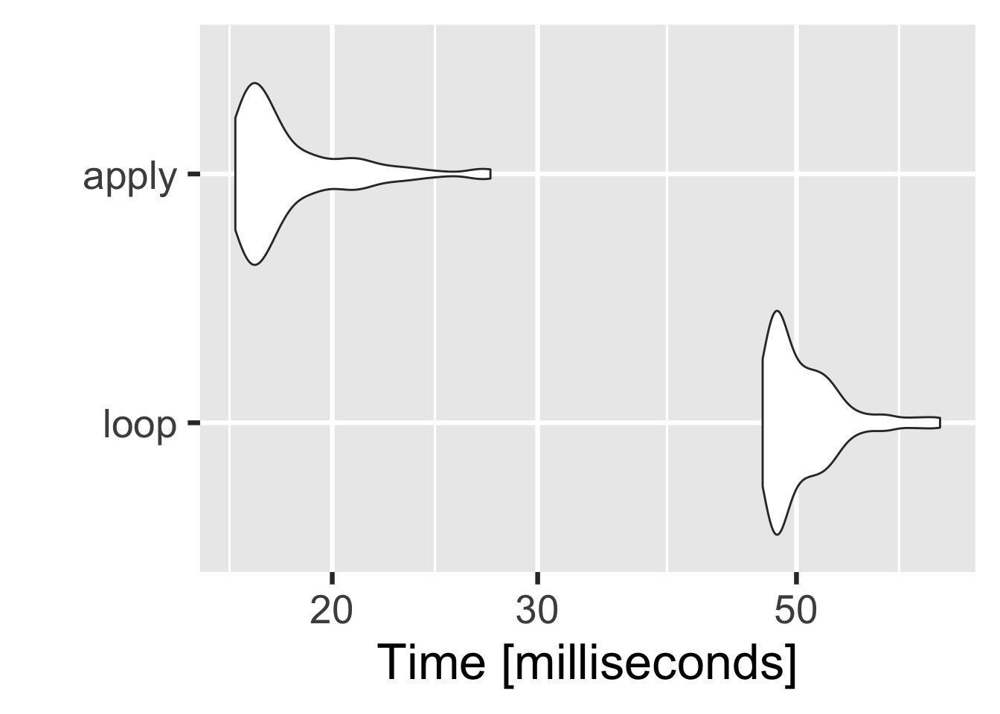
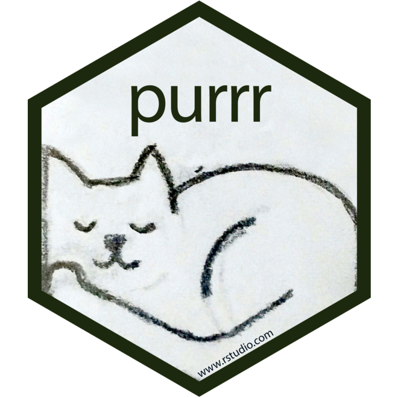

# data and model calibration
dd_list <- split(iris[, 1:4], iris$Species)
setosa <- summary(lm(Sepal.Length ~ ., data = dd_list[["setosa"]]))
versicolor <- summary(lm(Sepal.Length ~ ., data = dd_list[["versicolor"]]))
virginica <- summary(lm(Sepal.Length ~ ., data = dd_list[["virginica"]]))
# preparing final output as desired
models <- rbind.data.frame(
cbind.data.frame(
model = "setosa",
intercept = coef(setosa)[["(Intercept)", "Estimate"]],
se = setosa[["sigma"]], R2 = setosa[["r.squared"]],
R2adj = setosa[["adj.r.squared"]]),
cbind.data.frame(
model = "versicolor",
intercept = coef(versicolor)[["(Intercept)", "Estimate"]],
se = versicolor[["sigma"]], R2 = versicolor[["r.squared"]],
R2adj = versicolor[["adj.r.squared"]]),
cbind.data.frame(
model = "virginica",
intercept = coef(virginica)[["(Intercept)", "Estimate"]],
se = virginica[["sigma"]], R2 = virginica[["r.squared"]],
R2adj = virginica[["adj.r.squared"]]))
# some cosmetics
models$intercept <- round(models$intercept, 2)
models$se <- round(models$se, 2)
models$R2 <- round(models$R2, 2)
models$R2adj <- round(models$R2adj, 2)
modelsFunctional programming
Workshop series in R programming

-
DOS-OSF
R, at its heart, is a functional language which lends itself to a problem solving centred on functions. A functional style is about decomposing a big problem into smaller pieces, then solving each piece with a function. The three keys functional techniques for this are:
functionals,function factories&function operators.
1 Functionals
1.1 Introduction
A functional is a function that takes a function as an input and returns a vector as output. A common use of functional is as an alternative to for loops since loops have a bad rap for being slow, although they’re very flexible. Check out an simple examples below.
Calculating mean of random numbers generated:
1.2 Motivation
1.2.1 Scenario 1
Replace missing values (
NAs) in the data with 0
show code
| a | b | c | d | e | f |
|---|---|---|---|---|---|
| 6 | 7 | NA | 7 | 7 | NA |
| 6 | NA | 9 | 10 | 9 | NA |
| 4 | 6 | NA | 2 | 4 | 2 |
| 4 | 7 | 10 | 5 | 6 | 2 |
| 6 | 5 | 2 | 3 | 6 | 6 |
| 2 | 6 | 1 | 6 | 1 | 9 |
This code functionals-lapply has five advantages over others:
- It’s more compact.
- If the code for a missing value changes, it only needs to be updated in one place.
- It works for any number of columns. There is no way to accidentally miss a column.
- There is no way to accidentally treat one column differently than another.
- It is easy to generalise this technique to a subset of columns:
1.2.2 Scenario 2
Refer Table 1
Compute a set of descriptive statistics for each variable in the data
descriptive_stats <- function(x, ...) {
c(min = min(x, ...), avg = mean(x, ...),
med = median(x, ...),
max = max(x, ...), std = sd(x, ...))
}
descriptive_stats(dd$a, na.rm = TRUE)
descriptive_stats(dd$b, na.rm = TRUE)
descriptive_stats(dd$c, na.rm = TRUE)
# ... repeat the same for rest of the columns of dd1.2.3 Scenario 3
Compare performace between
forloop &applymethod for performingt.test.
loops vs. apply
dd <- as.data.frame(matrix(rnorm(1000 * 50, mean = 10, sd = 3), nrow = 1000))
dd$group <- sample(1:2, size = 1000, replace = TRUE)
1vars <- setdiff(names(dd), "group")
2perf <- microbenchmark::microbenchmark(
3 loop = for(i in vars) t.test(reformulate("group", i), dd),
4 apply = apply(dd[vars], 2, function(x) t.test(x, dd["group"])),
5 times = 100)
library(ggplot2)
autoplot(perf) + theme_grey(base_size = 25)- 1
-
Variables apart from
group - 2
- Function to compare performance (time consumption)
- 3
-
for loopapproach - 4
-
applyapproach - 5
- Iterating the comparison 100 times

1.3 Fundamental concept
We will focus on functionals provided by the purrr package. These functions (purrr:::map()) have a consistent interface that makes it easier to understand the key ideas than their base equivalents.
- 


purrr:::map()All map functions always return an output vector the same length as the input. Here
map()refers to “an operation that associates each element of a given set with one or more elements of a second set”. This makes sense here becausemap()defines a mapping from one vector to another.
1.4 Base vs. purrr
The base equivalent to map() is lapply(). The only difference is that map() has four more specific variants: map_lgl(), map_int(), map_dbl(), and map_chr() which returns an atomic vector of the specified type and not a list like lapply(). Base R has two apply functions sapply() & vapply(). Avoid sapply() because it tries to simplify the result, which makes it difficult to program with. If you don’t want to use purrr, it is recommend to use vapply(). For example, the equivalent to map_dbl(x, mean, na.rm = TRUE) is vapply(x, mean, na.rm = TRUE, FUN.VALUE = double(1)).
Warning
One needs to know the expected output type. It’s often useful to switch back to map(), because it can accept any type of output.
1.5 Extractions
The map functions have shortcuts for extracting elements from a vector, powered by purrr::pluck(). You can use
- a character vector to select elements by name
- an integer vector to select by position or
- a list to select by both name and position.
x <- list(
list(-1, x = 1, y = c(2), z = "a"),
list(-2, x = 4, y = c(5, 6), z = "b"),
list(-3, x = 8, y = c(9, 10, 11)))
x1.6 Passing arguments
It’s often required to pass additional arguments to the function that is called.
(x <- list(1:5, c(1:10, NA))
map_dbl(x, ~ mean(.x)) # NA
map_dbl(x, ~ mean(.x, na.rm = TRUE))
map_dbl(x, mean, na.rm = TRUE) # simpler formAny arguments that come after
fin the call are inserted after the data in individual calls tof(). Check Figure 2 (b). Note that these arguments are only vectorised over its first argument. If an argument afterfis a vector, it will be passed along as is Figure 2 (d).
Important
It is recommended writing out the full argument names, as it makes it easier to read.
So far the first argument to map() has always been the first argument. Imagine a scenario where the first argument should be constant, and a second argument is varying. Refer Figure 3. For example let’s say we have a vector that contains a few unusual values, and we want to explore the effect of different amounts of trimming when computing the mean.

1.7 Excercise
Let’s use purrr functions to solve a moderately realistic problem. We will fit a model using iris to each subgroup Species and extract the R2 & SE from each model.
Steps performed:
- Split
irisbySpecies- creates a list of 4data.frames - Fit a linear model for each data split with the formula:
Sepal.Length ~ Sepal.Length + Sepal.Width + Petal.Length + Petal.Width - Extract performance metrics from each model as mentioned above.
- Round the results up to 2 decimal place.
- Combine the results into one table for comparison.
| model | intercept | se | R2 | R2adj |
|---|---|---|---|---|
| setosa | 2.35 | 0.24 | 0.58 | 0.55 |
| versicolor | 1.90 | 0.33 | 0.61 | 0.58 |
| virginica | 0.70 | 0.32 | 0.77 | 0.75 |
| model | intercept | se | R2 | R2adj |
|---|---|---|---|---|
| setosa | 2.35 | 0.24 | 0.58 | 0.55 |
| versicolor | 1.90 | 0.33 | 0.61 | 0.58 |
| virginica | 0.70 | 0.32 | 0.77 | 0.75 |
| model | intercept | se | R2 | R2adj |
|---|---|---|---|---|
| setosa | 2.35 | 0.24 | 0.58 | 0.55 |
| versicolor | 1.90 | 0.33 | 0.61 | 0.58 |
| virginica | 0.70 | 0.32 | 0.77 | 0.75 |
library(dplyr)
split(iris[, 1:4], iris$Species) %>%
lapply(function(x) lm(Sepal.Length ~ ., data = x)) %>%
lapply(summary) %>%
lapply(function(x) c(intercept = coef(x)[["(Intercept)", "Estimate"]],
se = x[["sigma"]], R2 = x[["r.squared"]],
R2adj = x[["adj.r.squared"]])) %>%
lapply(round, 2) %>%
bind_rows(.id = "model") library(dplyr)
library(purrr)
split(iris[, 1:4], iris$Species) %>%
map(~ lm(Sepal.Length ~ ., data = .x)) %>%
map(summary) %>%
map(function(x) c(intercept = coef(x)[["(Intercept)", "Estimate"]],
se = x[["sigma"]], R2 = x[["r.squared"]],
R2adj = x[["adj.r.squared"]])) %>%
map(round, 2) %>%
bind_rows(.id = "model") 1.8 Map family
There are 23 primary variants of map() but fortunately, by design of purrr we only need to learn five new ideas:
modify(): Returns same type as inputmap2(): Iterate over two inputsimap(): Iterate with an index.walk(): Return nothingpmap(): Iterate over any number of inputs
| arguments | list | same_type | nothing |
|---|---|---|---|
| 1 | map() |
modify() |
walk() |
| 2 | map2() |
modify2() |
walk2() |
| 1 + index | imap() |
imodify() |
iwalk() |
| N | pmap() |
— | pwalk() |
map() always returns a list. modify() returns the same type of output as the input:
modify() has a very useful variant of called modify_if() which allows you to (e.g.) only double numeric columns of a data frame with modify_if(dd, is.numeric, ~ .x * 2).
dd <- data.frame(x = c(0, 10, 20), y = c(5, 6, 7),
z = c("a", "b", "c"), stringsAsFactors = FALSE)
map_if(dd, is.numeric, mean)
modify_if(dd, is.numeric, mean)
Note
modify() doesn’t modify in place, it returns a modified copy, to make it permanent modify one needs to assign it.
map() is vectorised over a single argument, .x thus making it poorly suited for some problems. For example, to find a weighted mean when you have a list of observations and a list of weights we need a new tool: a map2(), which is vectorised over two arguments.

x <- map(1:8, ~ runif(10)) # uniform random numbers
w <- map(1:8, ~ rpois(10, 5) + 1) # poisson random numbers
map_dbl(x, weighted.mean, w = w) # error
map2_dbl(x, w, weighted.mean) # desired outputThe implementation of map2() is quite similar to map(), here instead of iterating over one vector, it iterate over two in parallel. One of the big differences between map2() & map2() is that it recycles its inputs to make sure that they’re the same length.
Tip
purrr provides the walk family of functions that ignore the return values of the .f and instead return .x invisibly
imap() family is analogous to the to the loop over form for (i in seq_along(x)) & for (nm in names(x)). This allows you to iterate over the values and the indices of a vector in parallel.
x <- map(1:6, ~ sample(1000, 10))
imap_chr(x, ~ paste0("The highest value of ", .y, " is ", max(.x)))
Tip
imap() is useful if you want to work with the values in a vector along with their positions.
Since we have map() and map2(), one might expect map3(), map4(), map5(), instead purrr takes a slightly different tack with pmap(): you supply it a single list, which contains any number of arguments. In most cases, that will be a list of equal-length vectors, similar to data.frame.

Example
map2(x, y, f) is equivalent to pmap(list(x, y), f) map2_dbl(x, w, weighted.mean) is equivalent to pmap_dbl(list(x, w), weighted.mean)
A big difference between pmap() and the is that pmap() gives you much finer control over argument matching over other map functions because one can name the components of the list.I It’s always a good practice to name the components of the list to make it very clear how the function will be called.

params <- tibble::tribble(
~ n, ~ min, ~ max,
1L, 0, 1,
2L, 10, 100,
3L, 100, 1000)
pmap(params, runif)
Caution
Here, the column names are critical.
1.9 Reduce family
The next most important family of functions is the reduce family. This is smaller, with only two main variants & is less commonly used, but it’s a powerful idea. reduce() takes a vector of length n and produces a vector of length 1 by calling a function with a pair of values at a time.

Example
reduce(1:4, f) is equivalent to f(f(f(1, 2), 3), 4).
List of 4
$ : int [1:10] 9 1 6 7 3 1 2 2 1 6
$ : int [1:10] 1 7 8 7 4 7 5 3 6 3
$ : int [1:10] 8 1 4 4 10 7 6 5 6 10
$ : int [1:10] 3 8 2 4 6 4 6 2 10 2Let’s find the common observations from the above list
The first reduce() variant is accumulate() which it returns all the intermediate results.
map-reduce(map combined with a reduce) is the idea that powers technology likeHadoop. Now you can see how simple and powerful the underlying idea is. As a simple example, imagine computing the mean of a very large vector, so large that it has to be split over multiple computers. You could ask each computer to calculate the sum and the length, and then return those to the coordinator which computes the overall mean by dividing the total sum by the total length.
1.10 Predicate functionals
A predicate function returns a single TRUE or FALSE, it returns TRUE when it matches a vector. It applies a predicate to each element of a vector. purrr provides seven useful functions which come in three groups:
| function | description | |
|---|---|---|
| 1 | some(.x, .p) |
returns TRUE if any element matches |
every(.x, .p) |
returns TRUE if all element matches. |
|
none(.x, .p) |
returns TRUE if no element matches |
|
| 2 | detect(.x, .p) |
returns the value of the first match |
detect_index(.x, .p) |
returns the location of the first match | |
| 3 | keep(.x, .p). |
keeps all matching elements |
discard(.x, .p) |
drops all matching elements |
dd <- data.frame(x = 1:3, y = c("a", "b", "c"), stringsAsFactors = TRUE)
detect(dd, is.factor)
detect_index(dd, is.factor)
keep(dd, is.factor)
discard(dd, is.factor)
Note
map() and modify() also can take predicate functions.
2 Applications
2.1 MLE
The goal of maximum likelihood estimation (MLE) is to find the parameter values for a distribution that make the observed data most likely. To do MLE, we start with a probability function. For example, let’s take the Poisson distribution. If we know \(\lambda\), we can compute the probability of getting a vector \(\mathbf{x}\) of values (\(x_1\), \(x_2\), …, \(x_n\)) by multiplying the Poisson probability function as follows:
\[
P(\lambda, \mathbf{x}) = \prod_{i=1}^{n} \frac{\lambda ^ {x_i} e^{-\lambda}}{x_i!}
\] Let’s apply a log transformation to this probability function and simplify it as much as possible: \[
\log(P(\lambda, \mathbf{x})) = \log(\lambda) \sum_{i=1}^{n} x_i - n \lambda - \sum_{i=1}^{n} \log(x_i!)
\]
We can now turn this function into an R function.
#' log_likelihood
#' @param lambda shape parameter
#' @param x input vector
#' @return compute the (logged) probability
#' @example
#' log_likelihood(0.3, x = c(2, 1, 3, 0, 2))
#'
log_likelihood <- function(lambda, x) {
n <- length(x)
(log(lambda) * sum(x)) - (n * lambda) - sum(lfactorial(x))
}The R function is quite elegant because R is vectorised and, because it’s a statistical programming language, R comes with built-in functions like the log-factorial (
lfactorial()).
So far we’ve been thinking of lambda as fixed & known & the function gives us the probability of getting different values of x. But in real-life, we observe x and it is lambda that is unknown. We want to find the lambda that makes the observed x the most likely. That is, given x, what value of lambda gives us the highest value of log_likelihood()?
1X <- rpois(n = 1000, lambda = 0.3)
lambda <- runif(50, 0, 100)
2M <- map_dbl(lambda, ~log_likelihood(lambda = .x, X))
best_value <- lambda[M == reduce(M, max)]
# alternate approach
3optimise(log_likelihood, interval = c(0, 100), x = X, maximum = TRUE)- 1
-
Generate poisson random numbers & selecting a random set of
lambda - 2
- Finding the best value.
- 3
-
Automates the process of finding the best value. It will evaluate
log_likelihood()many times, using mathematical tricks to narrow in on the largest value as quickly as possible